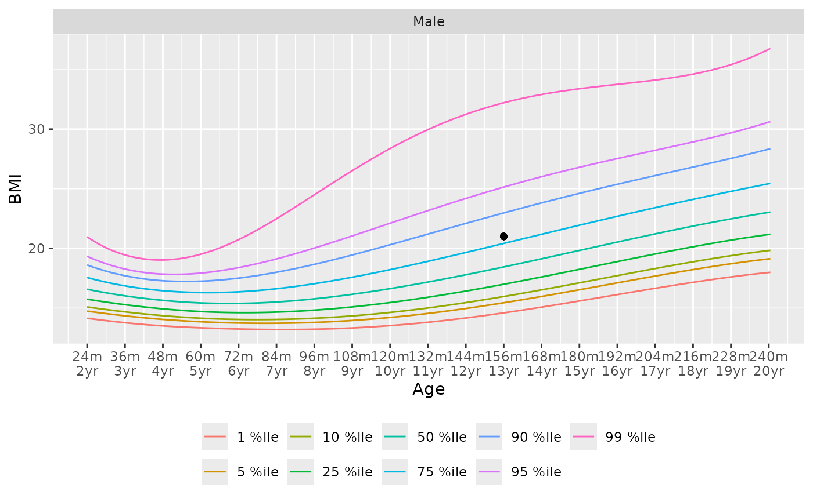

Cummulative Distribution Plots for Pediatric Growth Standards
Usage
gs_cdf(
metric,
male,
age,
height,
length,
source = getOption("pedbp_pgs_source", "CDC")
)Arguments
- metric
a character string denoting which growth metric to plot
- male
integer value, 1 = male, 0 = female
- age
numeric age, in months
- length, height
in centimeters
- source
a character string denoting the data source providing the parameters needed for the estimate. Valid values are "CDC" and "WHO". This can be set explicitly, or by using the
pedbp_pgs_sourceoption.
Examples
# Plot a # 13 year old male with a bmi of 21
gs_chart(metric = "bmi_for_age", male = 1) +
ggplot2::geom_point(x = 13 * 12, y = 21)

gs_cdf(metric = "bmi_for_age", male = 1, age = 13*12) +
ggplot2::geom_point(x = 21, y = p_bmi_for_age(21, male = 1, age = 13*12))